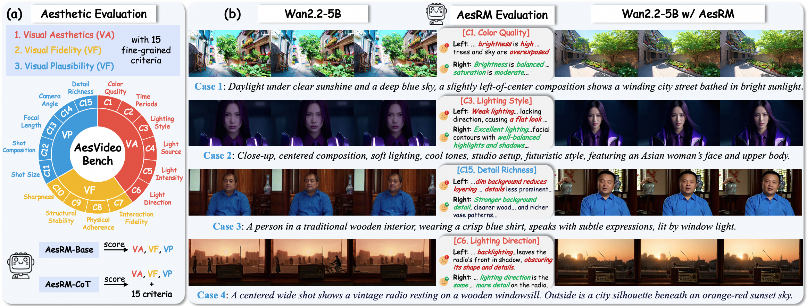
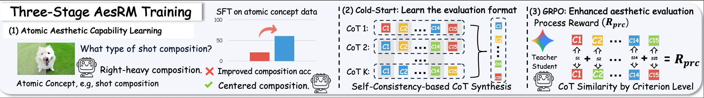

Despite rapid advances in photorealistic video generation, real-world applications such as filmmaking require video aesthetics, e.g., harmonious colors and cinematic lighting, beyond visual fidelity. Prior work on visual aesthetics largely focuses on images, often reducing aesthetics to coarse definitions, e.g., visual pleasure, without a rigorous and systematic evaluation. To improve video aesthetics, we propose a hierarchical rubric that decomposes video aesthetics into three core dimensions, Visual Aesthetics (VA), Visual Fidelity (VF), and Visual Plausibility (VP), with 15 fine-grained criteria, e.g., shot composition. This framework enables a large-scale expert-annotated preference dataset and an evaluation benchmark, AesVideo-Bench, containing about 2500 video pairs with expert annotations on VA, VF, and VP. We then build a family of Video Aesthetic Reward Models (AesRM): AesRM-Base, which directly predicts pairwise preferences on these dimensions to provide efficient post-training rewards and AesRM-CoT, which additionally generates CoT aligned with all 15 criteria to improve assessment interpretability. Specifically, we train AesRM with a three-stage progressive scheme: (1) Atomic Aesthetic Capability Learning, which strengthens AesRM’s recognition of fundamental aesthetic concepts, e.g., accurately identifying centered composition; (2) Cold-Start, aligning the model with structured reasoning protocols; and (3) GRPO, further improving evaluation accuracy. To enhance AesRM-CoT, we additionally propose self-consistency–based CoT synthesis to improve CoT quality and design CoT-based process rewards during GRPO. Extensive experiments show AesRM outperforms baselines on multiple aesthetics benchmarks and is more robust, with lower position bias. Finally, we align Wan2.2 with AesRM and observe clear aesthetic gains over existing aesthetic reward models. Quantitative and qualitative results illustrate AesRM enables models to generate videos with better color, more sophisticated lighting and richer details.

AesRM-Base directly predicts pairwise preferences on VA/VF/VP to provide efficient post-training rewards.
AesRM-CoT additionally generates CoT aligned with all 15 criteria to improve assessment interpretability.

(1) Atomic Aesthetic Capability Learning improves recognition of basic aesthetic concepts via SFT on curated atomic-aesthetics data. (2) Cold-Start aligns AesRM with structured evaluation protocols, using self-consistency–based CoT synthesis to improve data quality. (3) GRPO further improves evaluation accuracy with additional process rewards.
Based on cases from AesVideo-Bench, we show AesRM can perform aesthetic evaluation on video pairs.
<think> [美学-a.基础画质与色彩] 提示词要求：画面需体现“夜”景，同时有“南瓜灯”和“串灯”作为光源，应有明暗对比和色彩层次。视频A：画面亮度适中，对比度恰当。南瓜灯的暖橙色光芒与夜晚的冷色调环境形成鲜明对比，光影层次丰富。色彩饱和度自然，整体色调和谐，成功营造了温馨而神秘的万圣节氛围。视频B：画面整体严重偏暗，对比度过高。除了南瓜灯本身，环境几乎全黑，丢失了大量暗部细节。色彩上，除了南瓜灯的橙色，背景完全是冷色调的蓝色，色彩搭配单一，缺乏层次感。得分（A相对B）：1（A的亮度和色彩层次更符合提示词要求，B则因过暗和色彩单一而失分。） [美学-b.时间段] 提示词要求：时间为“夜晚”。标准是画面整体光线应来自人造光源，环境黑暗。视频A：准确表现了夜晚的特征。天空漆黑，所有光线均来自屋内的灯和南瓜灯，符合夜晚的设定。视频B：同样准确表现了夜晚的特征。天空和环境的黑暗感与A一致。得分（A相对B）：0（两者在时间段的表达上没有差异。） [美学-c.布光] 提示词要求：实用光（南瓜灯、串灯）和场景光（营造氛围）。视频A：布光合理。南瓜灯作为实用光，其光效自然地照亮了周围的木板和人物。屋檐下的串灯和门廊灯作为场景光，为画面提供了环境氛围和层次感。视频B：布光不合理。画面中只有南瓜灯这一处实用光，其光照范围和强度被极度夸大，导致前景和中景完全被压暗，未能有效塑造环境的立体感，光效不自然。得分（A相对B）：1（A的布光更真实、更具层次感，符合场景逻辑。） [美学-d.光源] 提示词要求：混合光，即自然光（夜晚）与人工光（南瓜灯、串灯）的结合。视频A：很好地实现了混合光的效果。背景的深邃夜空与前景的人工暖光形成对比，光源组合真实可信。视频B：同样实现了混合光的效果，但人工光源的强度被处理得过于极端，导致画面失衡。得分（A相对B）：1（A对混合光的平衡处理更优，画面观感更舒适。） [美学-e.光强度] 提示词要求：未明确要求柔光或硬光，但“长阴影”暗示了硬光的存在。视频A：光线性质为硬光。南瓜灯在地板上投下了轮廓清晰、边缘锐利的阴影，符合硬光的特征，增强了画面的戏剧感和立体感。视频B：光线性质同样为硬光。阴影的形态和边缘与A几乎一致。得分（A相对B）：0（两者在光强度类型的表现上没有差异。） [美学-f.光照方向] 提示词要求：“侧照明”。视频A：光线主要来自画面的左侧（南瓜灯）和左上方（串灯），在人物和物体上形成了明显的侧向照明效果，塑造了立体感。视频B：光线同样来自左侧，符合侧照明的要求。得分（A相对B）：0（两者在光照方向上均符合提示词要求。） [在美学维度对6个细则求和是 1+0+1+1+0+0=3>0。因此，美学维度累积得分大于0，认为视频A相对视频B在美学更好。] [真实感-a.物体交互真实性] 提示词要求：孩子们“走”过，与地面有交互。视频A：孩子们的脚步与地面接触基本准确，没有出现明显的悬浮或穿模。视频B：孩子们的脚部与地面接触同样基本合理。得分（A相对B）：0（两者在物体交互的真实性上表现相当，均无明显错误。） [真实感-b.物理规律遵循度] 提示词要求：无特殊物理现象。视频A：人物行走动作符合重力和惯性，没有违反物理规律之处。视频B：人物行走动作同样符合物理规律。得分（A相对B）：0（两者均未违反物理规律。） [真实感-c.画面与主体稳定性] 提示词要求：画面稳定。视频A：主体（南瓜、房屋）和背景稳定，没有不自然的抖动或形态变化。人物行走时有轻微的模糊，但这是动态表现的常见现象。视频B：画面同样稳定，主体和背景没有异常。得分（A相对B）：0（两者稳定性都很好。） [真实感-d.画面清晰度与细节] 提示词要求：无明确要求，但清晰的画面是真实感的基础。视频A：画面整体清晰锐利，无论是前景的木板纹理，还是背景中走过的其他人物，细节都比较丰富。视频B：画面在亮部区域（如南瓜灯）是清晰的，但大面积的暗部导致细节完全丢失，无法看清地板、墙壁和人物的细节。得分（A相对B）：0（虽然A的细节更丰富，但这更多是美学层面的光影选择问题，而非生成质量或真实感的硬伤。两者在核心的真实感（如物理、交互）上是接近的。） [在真实感维度对4个细则求和是 0+0+0+0=0。因此，真实感维度累积得分等于0，认为视频A相对视频B在真实感上接近。] [画面合理性-a.景别] 提示词要求：“中景”。视频A：画面从一个中景开始，随着人物走近，景别略有变化，但整体符合中景的范畴，能够清晰展示人物与环境的关系。视频B：景别与A完全一致。得分（A相对B）：0（两者景别一致且符合要求。） [画面合理性-b.构图] 提示词要求：“中心构图”。视频A：主体（南瓜）位于画面中轴线偏右的位置，更接近三分法构图，但视觉中心是南瓜和它发出的光，整体构图平衡。视频B：主体（南瓜）位于画面左侧，明显偏离中心，不符合“中心构图”的要求。得分（A相对B）：1（A的构图更符合提示词要求。） [画面合理性-c.焦段] 提示词要求：无明确要求。视频A：画面没有明显的广角畸变或长焦压缩感，视角接近人眼，应为标准镜头焦段，观感自然。视频B：焦段观感与A一致。得分（A相对B）：0（两者焦段一致。） [画面合理性-d.拍摄角度] 提示词要求：无明确要求。视频A：采用了平视角度拍摄，符合常规的观察视角。视频B：拍摄角度与A一致。得分（A相对B）：0（两者拍摄角度一致。） [画面合理性-e.细节丰富度与环境合理性] 提示词要求：画面需包含“美国郊区房屋”、“串灯”、“三个孩子”等元素。视频A：画面细节丰富，背景中的房屋、门窗、绿植、远处的街道和行人共同构成了一个合理且充实的郊区环境。孩子们的服装、道具也基本符合描述。视频B：画面细节匮乏，由于光线问题，环境信息大量缺失，无法有效展现“郊区房屋”的特征，环境显得空洞。得分（A相对B）：1（A在细节丰富度和环境合理性上远胜于B。） [在画面合理性维度对5个细则求和是 0+1+0+0+1=2>0。因此，画面合理性维度累积得分大于0，认为视频A相对视频B在画面合理性更好。]</think> <answer>视频A相比于视频B在美学、画面合理性方面更好，在真实感上接近。</answer>
<think> [美学-a.基础画质与色彩] 提示词要求：画面需为“Cel-shaded isometric digital art”，特点是色彩“vibrant”、“lush”，但整体氛围是“softly glowing”和“quiet wonder”。这意味着色彩要鲜艳但不能刺眼，对比度要能营造立体感但不能丢失细节。视频A：画面整体亮度和对比度控制得当，呈现出一种柔和的质感。色彩饱和度适中，绿色调为主，搭配花朵的暖色点缀，既符合“vibrant”的要求，又通过光影的微妙变化营造了层次感。整体色调和谐，成功营造了提示词所描述的“enchanted”和“quiet wonder”的氛围。视频B：画面的饱和度过高，尤其是绿色和黄色，显得过于浓艳，略带“数码感”，削弱了画面的细腻度和真实感。对比度也偏高，导致部分高光区域（如树顶和花丛）的细节有所丢失，整体质感不如视频A柔和。得分（A相对B）：1 (视频A的色彩和光影处理更显柔和与精致，更符合提示词中“softly glowing”和“quiet wonder”的氛围要求，而视频B的色彩过于饱和，略显刺眼。) [美学-b.时间段] 提示词要求：未明确指定时间段，但“softly glowing windows”和“floating fireflies”暗示了一个光线较暗的环境，如黄昏或夜晚。视频A：准确地表现了一个夜晚的场景。天空是深邃的蓝色，主体建筑和灯笼是主要光源，营造了宁静的夜间氛围。视频B：同样表现了夜晚的场景，天空颜色和光源设置与视频A基本一致。得分（A相对B）：0 (两者在时间段的设定和表现上没有明显差异。) [美学-c.布光] 提示词要求：实用光（灯笼、火flies）和场景光（整体环境光）结合，营造温暖、有层次感的氛围。视频A：布光设计精巧。灯笼作为实用光，其光效合理地照亮了周围的小范围区域。整体环境光处理得当，通过明暗过渡塑造了物体的立体感，光影层次丰富。视频B：布光方式与A类似，但整体光感稍平，光影的对比和过渡不如A细腻，使得画面的纵深感和物体的体积感稍弱。得分（A相对B）：1 (视频A的光影层次更丰富，布光效果更具艺术感和立体感。) [美学-d.光源] 提示词要求：混合光，包含人工光（灯笼）和自然光（月光）。视频A：很好地表现了混合光源的效果。灯笼的暖黄光与环境的冷色调形成对比，营造了温馨而不失神秘的氛围。视频B：同样表现了混合光源，但灯笼的暖光与环境的融合度稍差，整体光感不如A和谐。得分（A相对B）：1 (视频A对混合光源的处理更和谐、更具美感。) [美学-e.光强度] 提示词要求：“softly glowing”暗示了柔光的质感。视频A：整体光线质感偏向柔光，阴影边缘过渡自然，没有生硬的明暗分界线，符合“softly”的描述。视频B：光线质感相对偏硬，对比度更高，阴影边缘更清晰，与“softly”的描述略有出入。得分（A相对B）：1 (视频A的光强度更符合提示词中“softly”的要求。) [美学-f.光照方向] 提示词要求：未明确指定光照方向。视频A：采用了类似顶光的布光方式，光源来自画面的上方，符合鸟瞰视角的逻辑，光照方向统一、合理。视频B：光照方向与A一致，同样合理。得分（A相对B）：0 (两者在光照方向上没有差异。) [在美学维度对6个细则求和是 1+0+1+1+1+0=4>0。因此，美学维度累积得分大于0，认为视频A相对视频B在美学更好。] [真实感-a.物体交互真实性] 提示词要求：静态场景为主，主要评估物体摆放的合理性。视频A：场景中的所有元素，如石阶、花坛、小径，都稳固地放置在地面上，没有出现悬浮或穿模的现象。视频B：与视频A一样，所有物体的摆放都符合空间逻辑，接触点准确。得分（A相对B）：0 (两者在物体交互真实性上表现一致。) [真实感-b.物理规律遵循度] 提示词要求：静态场景，但有“butterflies fluttering”和“rippling koi ponds”。视频A：画面中有微小的动态元素，如飞舞的蝴蝶和水面的涟漪，其动态效果在卡通渲染风格下是可信的。视频B：动态元素的表现与视频A相同，物理规律遵循度一致。得分（A相对B）：0 (两者在物理规律遵循度上表现一致。) [真实感-c.画面与主体稳定性] 提示词要求：画面稳定，主体形态一致。视频A：画面为静态图，所有元素的形态和位置都保持绝对稳定，无任何抖动或变形。视频B：画面同样为静态图，稳定性与A相同。得分（A相对B）：0 (两者均为静态图，稳定性表现一致。) [真实感-d.画面清晰度与细节] 提示词要求：画面应包含“intricately carved walls”、“weathered”等细节。视频A：画面清晰，细节丰富。例如，石阶的纹理、花坛中不同种类的植物、小径的缝隙都清晰可见，符合“Cel-shaded isometric”风格下的高细节标准。视频B：画面清晰度与A相当，但如前所述，过高的饱和度在一定程度上影响了细节的呈现，使其不如A的细节观感来得丰富。得分（A相对B）：0 (两者在基础清晰度上接近，细节观感的差异主要源于美学层面的色彩处理，而非真实感维度的清晰度问题。) [在真实感维度对4个细则求和是 0+0+0+0=0。因此，真实感维度累积得分等于0，认为视频A相对视频B在真实感上接近。] [画面合理性-a.景别] 提示词要求：“The camera slowly pans from above, revealing the enchanted garden’s full scope”，暗示需要一个能展现整个花园的远景或大远景。视频A：采用了远景景别，完整地展示了提示词描述的整个花园场景，符合提示词要求。视频B：采用了与视频A完全相同的景别。得分（A相对B）：0 (两者在景别上完全一致且都符合要求。) [画面合理性-b.构图] 提示词要求：中心是小屋，周围有花床、石像、池塘。这描述了一种中心构图或平衡构图。视频A：采用了平衡构图，将小屋置于中心区域，周围的花坛、池塘、石像在视觉上形成了对称和平衡，画面稳定和谐。视频B：构图方式与视频A完全相同。得分（A相对B）：0 (两者在构图上完全一致。) [画面合理性-c.焦段] 提示词要求：未明确指定焦段，但“isometric”（等轴测）的视角暗示了类似标准镜头的无畸变视角。视频A：画面没有明显的广角或长焦畸变，视角自然，符合标准镜头的视觉效果。视频B：焦段观感与视频A完全相同。得分（A相对B）：0 (两者在焦段上完全一致。) [画面合理性-d.拍摄角度] 提示词要求：“from above”，即俯视角度。视频A：采用了高角度的俯视拍摄，符合提示词要求。视频B：拍摄角度与视频A完全相同。得分（A相对B）：0 (两者在拍摄角度上完全一致。) [画面合理性-e.细节丰富度与环境合理性] 提示词要求：包含小屋、花床、石像、池塘、蘑菇、树木、岩石等丰富元素。视频A：画面中包含了提示词描述的所有核心元素，且细节刻画到位，环境构建完整，逻辑自洽。视频B：同样包含了所有核心元素，环境构建也与A一致。得分（A相对B）：0 (两者在细节丰富度和环境合理性上表现一致。) [在画面合理性维度对5个细则求和是 0+0+0+0+0=0。因此，画面合理性维度累积得分等于0，认为视频A相对视频B在画面合理性上接近。]</think> <answer>视频A相比于视频B在美学方面更好，在真实感、画面合理性上接近。</answer>
<think> [美学-a.基础画质与色彩] 提示词要求画面色彩斑斓、阳光柔和、毛发细腻。这要求画面有适中的亮度和对比度，饱和度不能过高以免失真，色调需和谐统一。视频A：画面整体亮度偏高，对比度较低，导致光影层次感不足。色彩饱和度过高，尤其是小猫的夹克和背景的花朵，颜色过于鲜艳，显得有些刺眼和不自然，缺乏细腻的质感。视频B：画面亮度和对比度适中，光影关系更自然，小猫身上的高光和阴影过渡柔和，塑造了更好的体积感。色彩饱和度控制得当，整体色调和谐，既有活力又不失真，更符合“柔和光束”下的日光感。得分（A相对B）：-1 (视频A的饱和度过高，色彩失真，不如视频B的色彩表现自然和谐。) [美学-b.时间段] 提示词要求“日光照射”，即白天。白天的美学标准是画面明亮，色彩真实自然。视频A：符合白天场景，天空明亮，光线充足。视频B：符合白天场景，光线带有傍晚的暖调，同样属于白天的范畴。得分（A相对B）：0 (两者都成功表现了白天的时间段。) [美学-c.布光] 提示词要求“阳光透过云层洒落，形成柔和的光束”，这属于场景光。好的场景光应能塑造立体感并营造氛围。视频A：画面中存在明显的从右上方打来的场景光，在小猫身上形成了高光，但光感较为生硬，立体感塑造一般。视频B：场景光运用得更出色，光线从左后方打来，在小猫的背部和头顶形成了漂亮的轮廓光，同时正面有柔和的补光，使得小猫的立体感和毛发质感都非常出色，氛围营造更成功。得分（A相对B）：-1 (视频B的场景光运用更专业，对主体的塑造和氛围的营造都优于视频A。) [美学-d.光源] 提示词要求“日光照射”，属于自然光中的晴天光，但又有“透过云层”的柔化效果。视频A：表现了晴天光，但光线效果偏硬，对比度高，不太符合“透过云层”的柔和感。视频B：更好地模拟了被云层柔化后的日光效果，光线既明亮又不刺眼，质感更高级。得分（A相对B）：-1 (视频B对特定自然光的模拟更精准。) [美学-e.光强度] 提示词明确要求“柔光处理”。柔光的特点是阴影边缘模糊，对比度低。视频A：光线强度偏硬，小猫身上的高光点锐利，阴影边缘也比较清晰，不符合柔光的要求。视频B：光线强度明显是柔光，小猫身上的阴影过渡非常自然，整体光感柔和舒适，完全符合提示词要求。得分（A相对B）：-1 (视频B准确实现了柔光效果，而视频A的光强度与要求相悖。) [美学-f.光照方向] 提示词未明确指定光照方向，但“阳光透过云层洒落”通常意味着一个偏顶光或前侧光的方向。视频A：光线主要来自右上方，属于前侧光，方向明确。视频B：光线来自左后方，属于侧逆光，方向同样明确且效果出色。得分（A相对B）：0 (两者都采用了合理的光照方向，无优劣之分。) [在美学维度对6个细则求和是 -1+0+-1+-1+-1+0=-4<0。因此，美学维度累积得分小于0，认为视频A相对视频B在美学更差。] [真实感-a.物体交互真实性] 提示词要求小猫“前爪轻轻搭在麦克风上”。视频A：小猫的前爪与麦克风支架的接触点基本准确，没有出现穿模。视频B：小猫的前爪同样与麦克风支架接触，姿态自然，交互合理。得分（A相对B）：0 (两者在物体交互上表现相当，均无明显问题。) [真实感-b.物理规律遵循度] 提示词要求小猫“随着音乐节奏轻轻摆动身体”。视频A：小猫有轻微的身体摇摆和尾巴的摆动，动作符合物理规律，自然流畅。视频B：小猫的动作与A类似，同样有自然的摇摆和尾巴动作，符合物理规律。得分（A相对B）：0 (两者在物理规律遵循度上表现接近。) [真实感-c.画面与主体稳定性] 提示词要求一个稳定的画面。视频A：主体小猫的形态在微小动态中保持稳定，没有出现扭曲或闪烁。视频B：主体小猫的形态同样非常稳定，毛发和五官在动态中保持了一致性。得分（A相对B）：0 (两者画面稳定性都很好。) [真实感-d.画面清晰度与细节] 提示词要求“毛发表现细腻”。视频A：画面整体清晰，但小猫的毛发细节表现一般，有轻微的“塑料感”或“涂抹感”，不够蓬松自然。视频B：画面清晰度很高，小猫的毛发细节表现力极佳，每一根毛发的质感和光泽都清晰可见，非常逼真。得分（A相对B）：0 (虽然B的细节更优，但A的清晰度本身没有问题，两者在“真实感”层面差距不大，更多是“美学”和“画面合理性”上的差异。) [在真实感维度对4个细则求和是 0+0+0+0=0。因此，真实感维度累积得分等于0，认为视频A相对视频B在真实感上接近。] [画面合理性-a.景别] 提示词要求“中近景”。中近景通常拍摄人物胸部以上。视频A：画面从腰部以上取景，符合中近景的定义。视频B：画面从腰部以上取景，同样符合中近景的定义。得分（A相对B）：0 (两者都准确地执行了景别要求。) [画面合理性-b.构图] 提示词未指定构图，但画面主体是小猫。视频A：小猫位于画面偏左侧，麦克风在中间，构图平衡。视频B：小猫位于画面中心，是标准的中心构图，主体突出。得分（A相对B）：0 (两者构图均合理，无优劣之分。) [画面合理性-c.焦段] 提示词要求“背景虚化呈现出美丽的散景效果”，暗示使用标准或中长焦段。视频A：背景有明显的虚化效果，实现了散景，焦段选择合理。视频B：背景虚化效果与A类似，同样符合要求。得分（A相对B）：0 (两者在焦段选择和景深效果上表现一致。) [画面合理性-d.拍摄角度] 提示词未指定拍摄角度。视频A：采用平视角度拍摄。视频B：采用平视角度拍摄。得分（A相对B）：0 (两者拍摄角度一致且合理。) [画面合理性-e.细节丰富度与环境合理性] 提示词要求“盛开鲜花的花园”、“五彩气球”、“湛蓝色天空”。视频A：背景元素齐全，但花朵和气球的形态略显模糊和重复，细节丰富度一般。视频B：背景中的花朵种类和形态更多样，层次感更强，天空的云彩和气球的光影也更丰富，整体环境细节更胜一筹。得分（A相对B）：-1 (视频B的环境细节更丰富，画面内容更充实。) [在画面合理性维度对5个细则求和是 0+0+0+0+-1=-1<0。因此，画面合理性维度累积得分小于0，认为视频A相对视频B在画面合理性更差。]</think> <answer>视频A相比于视频B在美学、画面合理性方面更差，在真实感上接近。</answer>
<think> [美学-a.基础画质与色彩] 提示词要求：画面为“暖色调”，有“金色的晨光”，同时天空有“淡紫色”的晨雾。这意味着画面需要在保持整体温暖氛围的同时，拥有丰富的色彩层次和适中的对比度，以体现“柔和”的光辉。视频A：画面整体亮度严重不足，对比度过高，导致建筑的大部分区域陷入纯黑，丢失了大量暗部细节。虽然地平线有金色光辉，但天空的紫色和建筑的蓝色也过于饱和，色彩搭配显得有些生硬，缺乏柔和感。视频B：画面亮度和对比度更为均衡，建筑的玻璃幕墙在反射晨光的同时，其结构和纹理细节依然可见。色调上，金色的晨光与天空的淡紫色、建筑的冷蓝色调形成了和谐的冷暖对比，色彩层次更丰富，更符合提示词中“柔和而耀眼”的描述。得分（A相对B）：-1 (视频A因对比度过高、暗部细节丢失而显得画面扁平，不如视频B的色彩层次丰富和谐。) [美学-b.时间段] 提示词要求：时间为“日出”。日出的美学标准是太阳刚升起，光线低平，色调以橙、黄等暖色为主，天空呈现暖色与冷色的过渡。视频A：准确地表现了太阳初升的瞬间，地平线的暖色光芒和天空的冷色调过渡符合日出特征。视频B：同样准确地表现了日出的景象，太阳位置、光线色温和天空色彩都符合日出的美学标准。得分（A相对B）：0 (两者在时间段的还原上表现一致，均符合要求。) [美学-c.布光] 提示词要求：光线来自日出，属于场景光。要求光线能“映照”在玻璃幕墙上，形成“柔和而耀眼的光辉”。视频A：场景光的设置基本合理，但光线对环境的塑造不够细腻。由于对比度过高，光线在玻璃上的反射显得过于锐利，缺乏“柔和”的质感。视频B：场景光的运用更为出色，光线在湿润街道和玻璃幕墙上形成了自然的反射和漫射，光影过渡更显柔和，更好地塑造了建筑的立体感和空间的氛围。得分（A相对B）：-1 (视频B的场景光效更柔和、自然，更符合提示词描述。) [美学-d.光源] 提示词要求：光源为“日光”，具体为日出时的自然光。视频A：画面中的主光源是太阳，符合自然光的要求。视频B：画面中的主光源同样是太阳，符合自然光的要求。得分（A相对B）：0 (两者都正确使用了日出时的自然光作为主光源。) [美学-e.光强度] 提示词要求：光强度为“柔光”。柔光的特点是阴影边缘柔和，对比度较低。视频A：画面呈现出典型的硬光特征，明暗对比极为强烈，建筑与天空之间几乎没有过渡，阴影部分死黑，完全不符合“柔光”的要求。视频B：画面的光线质感更接近柔光，虽然有明暗对比，但暗部并非死黑，保留了细节，整体光比控制得更合理，更符合“柔光”的描述。得分（A相对B）：-1 (视频A的光线强度与提示词要求完全相反，视频B则更贴合。) [美学-f.光照方向] 提示词要求：光线从“地平线洒下”，属于逆光或侧逆光。视频A：光源位于画面深处，从建筑后方照射过来，形成了明显的逆光效果，符合提示词描述。视频B：光源位置与A一致，同样是从画面深处逆光照射过来，符合要求。得分（A相对B）：0 (两者在光照方向的实现上没有差异。) [在美学维度对6个细则求和是 -1+0+-1+0+-1+0=-3<0。因此，美学维度累积得分小于0，认为视频A相对视频B在美学更差。] [真实感-a.物体交互真实性] 提示词要求：地面倒映着楼宇轮廓。视频A：画面下半部分的倒影是存在的，但其形态被大面积的数字故障特效完全覆盖和破坏，无法判断其交互的真实性。视频B：与视频A情况相同，倒影被特效完全覆盖，无法评估。得分（A相对B）：0 (两者都因画面损坏而无法评估此项。) [真实感-b.物理规律遵循度] 提示词要求：空中几缕轻云缓缓飘动。视频A：画面中的云层是静止的，没有表现出飘动的效果。视频B：画面中的云层同样是静止的，没有表现出飘动的效果。得分（A相对B）：0 (两者均未实现云层飘动的动态效果，表现一致。) [真实感-c.画面与主体稳定性] 提示词要求：无特殊要求，默认要求画面稳定。视频A：画面主体（建筑）形态稳定，没有出现不合理的抖动或变形。视频B：画面主体（建筑）形态稳定，没有出现不合理的抖动或变形。得分（A相对B）：0 (两者画面稳定性都很好。) [真实感-d.画面清晰度与细节] 提示词要求：展现建筑的宏伟气势与未来科技感，暗示需要足够的清晰度和细节。视频A：画面整体清晰度尚可，但由于对比度过高，暗部细节大量丢失，影响了建筑结构的完整呈现。视频B：画面整体清晰度与A相当，但由于光影处理更均衡，建筑的细节和纹理得以更好地保留，视觉信息更丰富。得分（A相对B）：0 (两者基础清晰度相近，细节差异主要源于美学层面的光影处理，而非真实感层面的清晰度本身。) [在真实感维度对4个细则求和是 0+0+0+0=0。因此，真实感维度累积得分等于0，认为视频A相对视频B在真实感上接近。] [画面合理性-a.景别] 提示词要求：广角镜头，展现建筑群的宏伟气势。这通常对应远景或全景。视频A：画面呈现了多栋高楼的完整形态和部分街道，符合远景的定义。视频B：画面同样展现了建筑群的广阔场景，符合远景的定义。得分（A相对B）：0 (两者都满足了远景的景别要求。) [画面合理性-b.构图] 提示词要求：“中心构图”。视频A：画面以远处的太阳和地平线为中心，两侧的建筑形成对称，是典型的中心构图。视频B：构图方式与视频A完全相同，也是标准的中心构图。得分（A相对B）：0 (两者都准确地执行了中心构图的要求。) [画面合理性-c.焦段] 提示词要求：广角镜头。视频A：画面具有明显的透视感，近处的街道显得宽阔，远处的建筑高耸，这是广角镜头的典型特征。视频B：画面同样具有强烈的透视和空间纵深感，符合广角镜头的视觉效果。得分（A相对B）：0 (两者都成功模拟了广角镜头的焦段效果。) [画面合理性-d.拍摄角度] 提示词要求：“低角度拍摄”、“镜头从低处仰拍”。视频A：机位非常低，接近地面，向上仰视高耸的建筑，完全符合低角度仰拍的要求。视频B：机位同样很低，形成了强烈的仰视效果，突出了建筑的宏伟，符合要求。得分（A相对B）：0 (两者都准确地执行了低角度仰拍的拍摄要求。) [画面合理性-e.细节丰富度与环境合理性] 提示词要求：电路板纹理般的数字光影、空旷宁静的街道、微微湿润的地面、淡紫色晨雾。视频A：画面包含了数字光影、湿润地面等元素，但环境细节因过暗而缺失，且数字光影的出现显得突兀，与整体环境的融合度不高。视频B：画面细节更为丰富，建筑的结构、街道的质感都清晰可见。数字光影的元素也存在，但整体环境的构建更完整、更可信。得分（A相对B）：-1 (视频B在环境细节的丰富度和整体合理性上优于视频A。) [在画面合理性维度对5个细则求和是 0+0+0+0+-1=-1<0。因此，画面合理性维度累积得分小于0，认为视频A相对视频B在画面合理性更差。]</think> <answer>视频A相比于视频B在美学、画面合理性方面更差，在真实感上接近。</answer>
<think> [美学-a.基础画质与色彩] 提示词要求：画面需呈现“超现实主义插画”的质感，色彩为“羽毛绚丽的鹦鹉”（翠绿、钴蓝、明黄渐变），背景是“雾气缭绕的热带雨林”。这要求画面色彩鲜明、和谐，同时具备梦幻感。视频A：画面亮度适中，色彩饱和度高且和谐。鹦鹉的羽毛色彩鲜艳，符合“绚丽”的要求，同时与绿色的枝干和背景的雾气融合得很好。整体色调明亮、清新，符合“梦幻”的氛围。视频B：画面整体亮度偏暗，对比度过高。虽然光束区域很亮，但暗部细节丢失严重，导致背景雨林显得沉闷、压抑。色彩因暗部不足而显得不够通透，饱和度也因对比度问题显得有些刺眼，不如A和谐。得分（A相对B）：1（A的亮度和色彩搭配更符合提示词中“梦幻”、“绚丽”的氛围要求，而B的暗沉画面削弱了这种感觉。） [美学-b.时间段] 提示词要求：通过“强烈的日光穿透密林树冠”来判断，时间段应为白天。视频A：画面左上角有明确的太阳光源，光线穿过树林形成光柱，整体环境明亮，符合白天的特征。视频B：画面同样表现了白天的场景，有强烈的光束从上方射下。得分（A相对B）：0（两者都准确地表现了白天的时间段。） [美学-c.布光] 提示词要求：营造“光柱效果”，照亮林间飘浮的尘埃。这属于场景光，要求光线有方向感，并能塑造氛围。视频A：成功营造了光柱效果，光线从左上方穿透雾气，形成了体积感和神秘感。光线柔和地洒在鹦鹉和树枝上，塑造了主体的立体感。视频B：同样有光柱效果，但光束的边缘锐利，对比过于强烈，使得光束显得有些生硬，不如A中光与雾的融合来得自然。得分（A相对B）：1（A的光效处理更柔和、自然，更好地营造了梦幻氛围。） [美学-d.光源] 提示词要求：光源为“强烈的日光”，属于自然光中的晴天光。视频A：画面中的光源清晰地模拟了太阳光，光线强烈且带有方向性，符合晴天光的特征。视频B：同样表现了太阳光作为主光源，符合提示词要求。得分（A相对B）：0（两者都正确地使用了晴天光作为光源。） [美学-e.光强度] 提示词要求：“强烈的日光”暗示了硬光，会产生清晰的阴影和强烈的光感。视频A：光线穿过雾气变得相对柔和，虽然有光束，但阴影边缘并不十分锐利，介于硬光和柔光之间，这种处理方式更好地服务于“梦幻”的整体氛围。视频B：光束边缘极其锐利，明暗对比强烈，是典型的硬光效果。得分（A相对B）：1（A的光强度处理更贴合“梦幻”的氛围要求，而B的硬光效果过于直接，削弱了梦幻感。） [美学-f.光照方向] 提示词要求：光线“穿透密林树冠”，暗示光源来自上方，应为顶光或高位的前侧光。视频A：光线从左上方高处射下，符合顶光或高位前侧光的特征，在鹦鹉身上形成了自然的明暗过渡。视频B：光线同样来自高处，形成了典型的顶光效果。得分（A相对B）：0（两者在光照方向上都符合提示词描述。） [在美学维度对6个细则求和是 1+0+1+0+1+0=3>0。因此，美学维度累积得分大于0，认为视频A相对视频B在美学更好。] [真实感-a.物体交互真实性] 提示词要求：鹦鹉“静立于”树枝上。视频A：鹦鹉的爪子稳固地抓住树枝，接触点准确，没有穿模或悬浮现象。视频B：鹦鹉同样稳固地站在树枝上，交互关系合理。得分（A相对B）：0（两者在物体交互上都表现合理。） [真实感-b.物理规律遵循度] 提示词要求：画面为静态，主要评估光的物理表现。视频A：光的传播和尘埃的飘浮效果在物理上是可信的。视频B：光的传播效果同样可信。得分（A相对B）：0（两者都遵循了基本的光学物理规律。） [真实感-c.画面与主体稳定性] 提示词要求：画面应稳定。视频A：主体鹦鹉和背景环境都非常稳定，没有不自然的抖动或形态变化。视频B：画面为静态图，本身具有绝对的稳定性。得分（A相对B）：0（两者都非常稳定。） [真实感-d.画面清晰度与细节] 提示词要求：画面应有丰富的细节。视频A：画面整体清晰锐利，无论是鹦鹉的羽毛、树枝的青苔还是背景的叶片，细节都表现得非常清楚。视频B：画面在亮部区域清晰度尚可，但暗部区域因曝光不足，大量细节被阴影吞噬，无法看清。得分（A相对B）：0（虽然A的可见细节更多，但这主要是由美学层面的曝光选择造成的，而非画面本身的清晰度或渲染能力有本质差异。从渲染质量看，两者接近。） [在真实感维度对4个细则求和是 0+0+0+0=0。因此，真实感维度累积得分等于0，认为视频A相对视频B在真实感上接近。] [画面合理性-a.景别] 提示词要求：“近景构图”。视频A：画面聚焦于鹦鹉的上半身和它所处的树枝，是标准的近景景别。视频B：画面同样聚焦于鹦鹉和树枝，景别为近景。得分（A相对B）：0（两者都准确地执行了近景的景别要求。） [画面合理性-b.构图] 提示词要求：“中心构图布局”。视频A：鹦鹉和它所在的树枝位于画面的视觉中心，是典型的中心构图。视频B：主体鹦鹉位于画面的左侧三分之一处，是三分法构图，不符合中心构图的要求。得分（A相对B）：1（A严格遵守了提示词的构图要求，而B没有。） [画面合理性-c.焦段] 提示词要求：“超广角镜头”。视频A：画面视野较窄，没有明显的镜头畸变，更接近标准或中长焦镜头的视角，与“超广角”的要求不符。视频B：画面同样没有广角镜头的特征，如空间压缩感或边缘畸变，不符合“超广角”的要求。得分（A相对B）：0（两者都未满足超广角的要求，表现接近。） [画面合理性-d.拍摄角度] 提示词要求：未明确指定拍摄角度，但“静立”的主体通常采用平视角度。视频A：采用了平视角度，与鹦鹉处于同一水平线，符合常规拍摄逻辑。视频B：同样采用了平视角度。得分（A相对B）：0（两者都采用了合理的平视角度。） [画面合理性-e.细节丰富度与环境合理性] 提示词要求：环境为“古老橡树”、“青苔与藤蔓”、“层层叠叠、雾气缭绕的热带雨林”。视频A：环境细节非常丰富，前景的树枝、中景的鹦鹉、背景的树林层次分明。青苔、藤蔓、雾气等元素一应俱全，环境构建完整且合理。视频B：环境细节因光线问题而大量缺失，背景的雨林显得模糊不清，层次感和丰富度远不如A。得分（A相对B）：1（A在环境细节的丰富度和层次感上明显优于B，更好地构建了提示词所描述的奇境。） [在画面合理性维度对5个细则求和是 0+1+0+0+1=2>0。因此，画面合理性维度累积得分大于0，认为视频A相对视频B在画面合理性更好。]</think> <answer>视频A相比于视频B在美学、画面合理性方面更好，在真实感上接近。</answer>
We align Wan2.2 with AesRM to improve video aesthetics. Below are 5 cases showing 7-model comparisons.
@article{,
title={},
author={},
journal={},
year={}
}